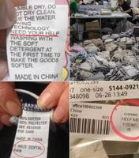
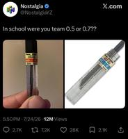

0



0




European misinformation researchers say TikTok, X, and Meta are obstructing access to platform data required under the EU's Digital Services Act through rejections, restrictive quotas, costly APIs, and burdensome security demands. Although regulators have fined X and pushed platforms to improve access, researchers remain skeptical that the changes will provide reliable, reproducible data at scale. Ars Technica reports: In recent years, social media companies shut down public access tools like Meta's CrowdTangle and replaced them with content libraries, or, like X, paywalled their API data, forcing academics to pay "hundreds of dollars a month," said Duncan Allen, a research officer at Democracy Reporting International (DRI) in Germany. Researchers say that without API access, what Iamnitchi describes as the "black holes" in what society knows about how these platforms recommend content or handle reports regarding sensitive content will only grow. Others, like TikTok, cap how many posts any researcher account can pull each day, which Allen said can make it "impossible to study anything at scale."
The DSA was meant to solve this by allowing vetted researchers at credible institutions to have access to API data if they could show it would help in studying systemic risks, from illegal content to threats to fundamental rights. But two years after the law took effect, researchers say they struggle to meet its security requirements and face narrow interpretations from platforms of what qualifies as a systemic risk. Application forms differ by platform, but most require data to be stored on infrastructure that cannot be compromised -- such as a machine physically disconnected from the Internet -- a resource most universities lack, [said Adriana Iamnitchi, chair of computational social sciences at Maastricht University in the Netherlands, who leads research into online disinformation campaigns.]
Even for researchers who secure approval, "there's no guarantee that the data is good," said L. K. Seiling, coordinator of the DSA40 Collaboratory, a German initiative that tracks 46 DSA applications. API data is often difficult for a colleague to reproduce, so a researcher's work cannot be checked for errors, which Iamnitchi said is a "basic requirement of science." DSA40 data shows that of 46 tracked applications, 20 were approved and 14 rejected. But approval rates vary widely: TikTok approved 11 of 13 applications, while X rejected 11 of 23. The true rejection rate is likely higher because the tracker relies on voluntary reporting, Seiling said. "There's no structured advantage for researchers to use this pathway," Seiling said. "Data access as it's set up right now tries to disincentivize researchers."
Read more of this story at Slashdot.
Thousands of Germans have been threatened with fines or prison sentences for social media posts, reports The Telegraph, calling the country's political speech laws "unusually stringent for an EU member state."
One German had his home raided for calling a minister a "Schwachkopf [dummy]" while another was fined €2,000 (£1,700) for calling Friedrich Merz a "lying Fritz" under a law that, critics claim, makes it effectively illegal to make fun of politicians. The number of investigations under Section 86a, the Nazi symbols ban... has more than doubled over the past decade according to official police statistics. Investigations into the "political insult" law also reached record levels in 2025. The surge in cases is so vast that the UN has launched an investigation into free speech violations in Germany, a step typically reserved for dictatorships and banana republics...
In one recent case, a pensioner was investigated under Section 188 for posting "Pinocchio is coming" on Facebook, after he learnt Friedrich Merz, the chancellor, was visiting his hometown... The case was dropped after the story caused an outcry in Germany, and police have since clarified that calling the chancellor Pinocchio is not a crime... In November 2024, police in Bavaria raided the home of another pensioner because he called Robert Habeck, the then vice-chancellor of Germany, a "schwachkopf", or dummy. The raid was reportedly launched after Mr Habeck personally filed a criminal complaint against the pensioner. Prosecutors eventually dropped the investigation after deciding that the insult "dummy" was not of "sufficient weight" to merit criminal charges.
While such cases might seem like bizarre outliers, there are plenty of others. In 2021, police raided a man's apartment in Hamburg after he told a senator "you're such a d---," and this year a resident was fined €2,000 for calling Mr Merz a "lying Fritz". Official figures show a record 4,792 Section 188 cases were filed in Germany in 2025, with the numbers rising by nearly 85 per cent between 2023 and 2025.
The article notes both left- and right-leaning free speech activists in Germany are calling for some of the stricter laws to be scrapped. And it adds that the uproar "bears some similarities to the free speech debate in Britain, where citizens have had a knock on the door from police over opinions posted online."
Read more of this story at Slashdot.
There's been a change to NASA's launch of six satellites for solar storms research. Space.com reports that those satellites "were originally slated to lift off on a United Launch Alliance Vulcan Centaur rocket but have now been assigned a SpaceX Falcon Heavy, according to a NASA mission update."
[NASA's Sun Radio Interferometer Space Experiment mision — or SunRISE] will fly to space as part of a rideshare mission sponsored by the U.S. Space Force's Space Systems Command. Though it's not stated specifically in the NASA release, that may be a hint as to why the mission's rocket was changed. On its most recent launch [U.S. Space Force mission USSF-87], Vulcan experienced an anomaly in one of its solid rocket boosters — the second such incident to occur during the rocket's four launches to date. Vulcan succeeded in delivering the USSF-87 payload to its designated orbit on that launch, but the recurrence of the booster issue during ascent prompted the Space Force to pause national security launches on Vulcan until it could be addressed. Which mission SunRISE will be manifested on has not yet been released, but Space Force's Space Systems Command [SSC] has already shifted other launches between Vulcan and SpaceX's Falcon 9...
Falcon Heavy is SpaceX's heavy-lift launch vehicle... that consists of three modified Falcon 9 first stages, and has launched 12 times since it debuted in 2018. Four of those have delivered national security payloads to orbit, with the most recent of those, USSF-52, launching in December 2023. Falcon Heavy's most recent flight overall occurred this past April, when it sent the Viasat-3 F3 telecom satellite to orbit. Falcon Heavy's next mission will lift off with NASA's Nancy Roman Space Telescope, currently set for no earlier than Aug. 30. SunRISE is scheduled to launch later this year...
Sientists will use data collected by the satellites "to improve prediction models for impending space weather, which in turn could lead to mitigation plans to better thwart the effects of such solar events on orbital infrastructure."
Thanks to long-time Slashdot reader schwit1 for sharing the article.
Read more of this story at Slashdot.
Digital Trends reports:
Apple could unveil its first smart glasses at WWDC in June 2027, followed by a consumer release toward the end of the year, according to Bloomberg... Part of the delay reportedly stems from Apple's engineering and marketing teams spending more time refining the product and deciding how to address the privacy concerns...
Apple has reportedly considered glasses without cameras, as well as a version where the cameras can analyse the surroundings but cannot record photos or video. Such an approach could still support object recognition, navigation, Siri, calls, and music playback. The company is also expected to favor on-device processing, avoid facial recognition, keep recordings away from AI training, and use a more visible light around the camera.
Read more of this story at Slashdot.
A U.S. district court "has dismissed Google's case against SerpApi over that company's scraping of search results to train AI models," reports Computerworld. Google had claimed that it was protecting copyright holders — and that SerpApi's actions breached America's Digital Millennium Copyright Act (DMCA):
[Google] made two claims: first, that no person shall circumvent a technological measure that effectively controls access to a work protected under this title, and second that no person shall manufacture, import, offer to the public, provide, or otherwise traffic in any technology, product, service, device, or component protected by the Act. SerpApi claimed that the URLs and other links that were being served by Google did not in themselves entail copyright and the judge agreed. In her judgment, she said that there was no indication that the copyright holders had authorized Google to take action against SerpApi.
The case is not completely over as the judge has given Google 21 days to amend its complaint to demonstrate that it was acting on behalf of the copyright owners.
SerpApi's CEO reacted to the court's ruling as "a win not just for SerpApi, but for all who depend on an open internet. We're pleased that the court rejected Google's attempts to expand the DMCA to assert control over access to public pages. The internet's founding principle — open access to usable information — is essential to driving innovation and ensuring everyone benefits from the promise of data. SerpApi will continue supporting developers, AI companies, researchers, and businesses that rely on access to public search information."
Some analysis from Daring Fireball blogger John Gruber:
I've come around on SerpApi in the last few months. My initial take was that it surely must be illegal for a company to scrape Google's search results and offer access to that data as an API. But I've come around to the argument that what SerpApi is doing to obtain Google search results is, well, exactly how Google scrapes the rest of the entire web to build its search index. It's all just scraping publicly accessible web pages. This December piece by Mike Masnick at Techdirt is what began to change my mind.
In fact, Masnick wrote, Google "built its entire business on scraping the web without asking permission first. And now it wants to use one of the most abused provisions in copyright law to stop others from doing something functionally similar to what made Google a tech giant in the first place."
Now Google is even getting heckled about the decision on social media. "If Google wants to refile the suit within the allowed 21 days, it has to admit that site owners have copyright protection of their work and THAT would open the door to them suing Google for scraping their content for AI Overviews."
Read more of this story at Slashdot.
"Welcome home!" NASA posted on X.com, sharing footage of a successful "parachute-assisted" landing on a Kazakhstan steppe for the Soyuz MS-28, carrying three astronauts who'd spent 241 days on the International Space Station. (And YouTube has a full two-hour video with NASA's coverage of the landing.)
A NASA web page notes they orbited Earth 3,856 times and traveling more than 102 million miles after docking with the Space Station on November 27. It was the first mission for NASA astronaut Chris Williams and Roscosmos cosmonaut Sergei Mikaev (and the second mission for Roscosmos cosmonaut Sergey Kud-Sverchkov). "After routine post-landing medical checks, recovery teams will fly the crew by helicopter to Karaganda, Kazakhstan. Williams then will board a NASA aircraft bound for the agency's Johnson Space Center in Houston."
Read more of this story at Slashdot.
It started with some underground utility work for the South Carolina town of Surfside Beach (population: 4,155). "Public records confirm that a payment of $545,598.30 was issued," according to a local news station — but the CEO of Wildcat Contractors "stated that the account that received the money is a scammer account and that his company has an overdue invoice for underground utility work completed in Surfside Beach."
Yahoo picks up the story:
After the payment issue surfaced, Wildcat said Surfside Beach sent over the email thread containing the payment confirmation. The company told WMBF it noticed multiple red flags in the chain. One involved an email address where "Wildcat" appeared with an extra "i." Another involved documents that the company said included a forged signature taken from a prior notarized document. Wildcat said the money was sent to a spoofing account claiming to be the contractor.
More local reports are unraveling what happened:
According to the Wall Street Journal, the town's finance director said a town employee called Wildcat's project manager on March 13, the day the payment was sent. The project manager referred the caller to [Wildcat CEO] Bowker. The town then called Bowker's mobile phone and left a voicemail about the ACH transfer. Bowker told the Wall Street Journal she does not recall the voicemail but acknowledged she may have missed it.
Now a new report released by a law firm hired by the town to investigate "shows it did make an attempt to verify before sending $545,000 to a fraudulent bank account," according to local news reports:
According to the report, the town sent an email to Wildcat's legitimate email domain on March 13 requesting a callback for verbal verification before sending the payment. Surfside received a response to that email with a phone number, though it remains unclear whether that response came from a real Wildcat employee or from the scammers. The report found that the fake town domain was used in communications between both parties throughout the process, which the law firm overseeing the investigation said was likely created to facilitate the fraud and delay its discovery.
That seems to be the case in a nutshell:
Investigators determined the fraudsters used spoofed and typo-squatted email domains, including surfsidesbeach.org, to impersonate town officials and redirect the payment. The fraudulent domain was created March 9 and was used to help conceal the scheme, according to investigators. Town officials said they are continuing to work with the FBI, South Carolina Law Enforcement Division, and their insurance partners to recover the funds.
"The town has also implemented additional security measures to strengthen payment verification procedures and reduce the risk of similar incidents."
Read more of this story at Slashdot.
An anonymous reader quotes a report from Reuters: Nvidia is in talks to provide roughly $250 billion in financing guarantees for OpenAI as part of a massive data center project, the Wall Street Journal reported on Sunday. The backstop from Nvidia would help the ChatGPT maker lease a 10-gigawatt project that SoftBank's energy subsidiary is developing in southern Ohio, the newspaper said, citing people familiar with the matter. For OpenAI, a deal would be the first step toward controlling its own infrastructure instead of renting it from Microsoft, Amazon, and Oracle, while for Nvidia, it would guarantee demand for its chips for years to come.
The project is expected to cost more than $500 billion in total, including the chips inside the data center, according to the WSJ. The $250 billion guarantee covers the data center lease and debt financing, but would not cover the Nvidia chips inside the center, the WSJ said, adding that the chipmaker was also discussing financing OpenAI's chip purchases worth up to $350 billion. Nvidia's backing would support financing vehicles aimed at reassuring lenders about the project's funding, the report added. The first phase of the project is expected to be finished in 2028, with around 800 megawatts of power, the Journal said. The report notes that the U.S. government will control access to the power, while Japan will fund it separately under a trade agreement tied to Tokyo's $33 billion investment in a natural gas plant. Commerce Secretary Howard Lutnick will reportedly help determine who receives access.
Read more of this story at Slashdot.
An anonymous reader shared this report from Phoronix:
A patch series that appears destined for the upcoming Linux 7.3 merge window is what's dubbed the "KVM Chainsaw" as a major code clean-up in dealing with the kvm_mmu "god data structure". Red Hat engineer and KVM maintainer Paolo Bonzini has merged the kvm-chainsaw branch to KVM's "next" Git branch. With this KVM Chainsaw work now in the next branch, it should be submitted for the upcoming Linux 7.3 cycle.
The KVM Chainsaw work deals with the kvm_mmu structure being overloaded with multiple uses and splits it down into three parts for better handling current KVM usage. Paolo explains of KVM Chainsaw with the merge to the KVM.git next branch:
"The kvm_mmu is a "god data structure" that includes three different tasks: describing the guest page table's format, walking the guest page tables and building the page tables. This means that the (already poorly named) nested_mmu is only used in part, since it has no page tables to construct. Furthermore, some parts are reused across guest and host page tables (such as the reserved bits detector) but others are not; for example permission_fault is replaced by simplified code such as is_executable_pte().
This series cleans this up by splitting kvm_mmu in three parts...
Read more of this story at Slashdot.
Variety reports:
"The Odyssey" leaks have begun, as a high-quality bootleg of the film reached millions of people on X thanks to a viral tweet on July 25. At 2:25 p.m. PT, a post on X reading "Someone uploaded 'The Odyssey' full movie on X. Can you believe it?" amplified a message from a now-suspended account. The message included a high-quality version of the film, as confirmed by Variety, and climbed to over 2.1 million views within two and a half hours. By that time, the streaming film was replaced by a takedown notice, and then the account was suspended...
As of July 26, a few clones of the bootlegged film are available on X, but they've been mostly flooded away by mislabeled files promising "The Odyssey" but actually showing a Rickroll, the longtime internet prank of tricking people into watching the music video for Rick Astley's 1987 song "Never Gonna Give You Up."
The article notes the leak "certainly doesn't seem to have hurt the film's still-surging box office in its second weekend, during which it earned another $87 million," or lessened demand for Imax 70 mm tickets.
Read more of this story at Slashdot.
270,000 people have been displaced by wildfires in France and Spain, reports the Guardian. A wildfire even forced evacuations in Scotland.
And wildfires "have now scorched four million acres of land in the U.S.," reports NPR, as tens of millions of people in North America "are continuing to endure hazardous smoke from out of control wildfires burning across Canada and the Western U.S."
At America's National Interagency Fire Center, NPR's wildfire correspondent says all of America's firefighting resources have now been deployed across the country. "So if we get another big fire, we're in trouble... International aid could be harder to come by if the situation in Southern Europe gets worse and firefighters are going to be needed there."
Meanwhile Toronto was blanketed this week "with eye-watering, cough-inducing soot," writes a climate-change reporter for the Toronto Star newspaper, "briefly giving us the worst air quality in the world." But looking to the future after a wildfire that's 50% larger than any in Ontario's history (315,000 hectares or 778,331 acres), he had this to say about the eye-watering smoke. "It will be back." The article's headline warned of "Our smoke-filled future" and how Canada "must prepare for bigger wildfires, every summer — forever."
Even if global carbon emissions were cut dramatically, so long as any greenhouse gases are being put into the atmosphere, climate scientists say the world will continue to get hotter. And as the temperature rises, the forests dry out and the wildfires will get bigger, stronger and more frequent. "It's not going to get better. It's going to get worse," said Edward Struzik, a fellow with the Institute for Energy and Environmental Policy at Queen's University and the author of Dark Days at Noon: the Future of Fire . "These fires aren't going away. Toronto is going to get smoke every summer...."
The best solution would have been to dramatically cut emissions years ago. The harsh scientific reality is there's nothing we can do to stop wildfire smoke from blanketing cities for a few days every summer — and it's going to continue for decades to come. We're all going to need to buy air purifiers and masks and get used to it....
"The idea that we can thin our way through the boreal forest boggles the mind," [says Zeke Hausfather, a climate scientist at Berkeley Earth, an independent non-profit research organization]. "There aren't enough people in Canada to do that." The boreal forest in Canada is an enormous and largely roadless expanse bigger than the entire European Union. In comparison, America's much smaller forests are criss-crossed by roads, making firefighter access much quicker and easier. And the nature of the forests is fundamentally different as well, said Hausfather, who wrote an article summarizing research on the subject. "Western U.S. forests have evolved for frequent low-level fires that burn out the undergrowth — usually every five to 30 years," he said. "Historically, before fire suppression, fires would burn through, and they wouldn't actually kill the trees. They'd just kill smaller trees and clear out the brush."
"The boreal forest is a fundamentally different beast," he said. "It's an ecosystem designed to burn." With smaller, more densely packed trees, the boreal is wetter and colder and doesn't burn anywhere near as often — every 100 to 200 years on average, Hausfather said. But when fire does erupt, it's often much more intense, burning up into the canopy and levelling everything in its path... Clearing out the dead wood on the ground wouldn't prevent, or even slow, the canopy fires that sweep the boreal, said Hausfather.
Read more of this story at Slashdot.
America's garbage trucks can do more than just collect trash, reports Newsweek. They may also help identify code violations using AI.
Officials in Cape Coral, Florida, recently considered equipping sanitation trucks with AI-powered cameras that would photograph properties as crews complete their normal collection routes. The system would have been designed to identify potential issues such as overgrown lawns, peeling paint, and illegal dumping, and to flag violations so the city staff can review them later before taking enforcement action... However, in a statement on July 13, Cape Coral officials said it would not be moving forward with the camera technology, citing cost issues and insufficient benefits.
"Claims suggesting that this technology would automatically identify, cite or fine residents are inaccurate," the statement also noted... Cape Coral officials say that a camera system in the future would assist — not replace — human code enforcement officers, and employees will review any AI-generated alerts before violations are issued. "Even if such a system were to be considered in the future, any potential code violations would require review and verification by a Code Compliance Officer before any enforcement action could be taken," the organization wrote.
But Cape Coral, Florida "is not the first city to explore the technology," the article notes.
AI imaging systems developed by City Detect have already been deployed in several municipalities. According to the company's published case studies, Stockton, California, used the platform to analyze nearly 40,000 parcels, capturing almost 200,000 images while identifying thousands of potential code issues. Cathedral City, California, has also used the technology to assist code enforcement, while Dallas approved funding for a similar program pending final implementation.
Thanks to Slashdot reader fjo3 for sharing the article.
Read more of this story at Slashdot.
"The rise of TikTok, Instagram Reels and Amazon storefronts has created a new kind of white-collar exit strategy," reports Bloomberg. Workers ditch office jobs not to become celebrities, necessarily, "but to piece together an income online through brand deals, affiliate links and highly personal videos documenting everyday life."
In many cases, the followers necessary to sustain a living are smaller (and more attainable) than people might assume. A small but loyal audience can now generate enough income to rival a midlevel salary. Welcome to the middle-class creator economy. Last year, 25-year-old Abi Platock balanced a corporate marketing job in New York while posting online in her spare time. She built her audience by posting one or two videos a day, offering career advice, beauty tips and daily vlogs. "I signed my first brand deal in the four-figure range, and for me that was just such a big eye-opening moment," Platock says of her partnership with deodorant brand Secret. She had 8,000 followers on TikTok at the time. "You can totally make it work without having hundreds of thousands of followers." Platock, who now has roughly 25,000 followers across platforms, has signed about $25,000 in brand deals so far this year and expects her annual creator income to reach around $50,000 by yearend.
Her experience reflects a broader shift in advertising. Brands are increasingly moving money toward so-called microinfluencers — smaller online personalities who have less than 100,000 followers. "They are hiring a bunch of microcreators at scale instead of hiring a handful of macrocreators for what could potentially be the same cost," says Ali Grant, co-chief executive officer of the Digital Department, a creator management company. And they perform where it matters most: engagement. An engagement rate of 3% is considered strong, and some microinfluencers exceed 10%, Grant says of the closely watched metric that tracks how often followers interact with content through likes, comments, shares and saves. Microinfluencers average a 3.2% engagement rate, almost triple the 1.1% rate for macroinfluencers (more than 1 million followers), according to growth marketing agency ATTN... A TikTok partnership with a creator who has around 50,000 followers can run a brand more than $3,500 for a single post, Grant says; with 10 times the followers, that fee might just triple, to around $10,000....
The influencer marketing economy ballooned to a projected $33 billion in 2025 up from $1.7 billion in 2015. The segment gained momentum after the COVID-19 pandemic, as dissatisfaction with traditional work pushed many to reconsider conventional career paths, says Brooke Duffy, a professor of communications at Cornell University. "They realized the trade-offs in terms of the investments of time, energy and human capital were not necessarily worth sacrificing so much of one's personal self for," she says. Success online can bring greater freedom — and even higher pay than many traditional office jobs, which have a median US salary of $69,000, according to Glassdoor. But the middle-class hustle still requires constant effort to maintain. The career has no promise of lifetime longevity. And unlike traditional workers, creators have no predictable paycheck or job protections, making career stability elusive. Roughly 57% of 3,000 surveyed full-time creators earn below a living wage from content creation, according to a report last year from Influencer Marketing Hub. Income from social media can fluctuate wildly from month to month, driven by shifts in algorithms, sponsorship cycles and platform trends.
"You could have a month where you make zero dollars, or you could have a month where you make $10,000," Platock says.
The article cites Gallup Poll data released last year that found employee engagement in the U.S. had fallen to its lowest level in a decade [with engagement defined as "the psychological attachment workers have to their work/team/employer]. "Among the hardest-hit groups were Generation Z and workers in finance and technology. Broader workplace challenges, including rapid organizational change, hybrid and remote work transitions, and rising employee expectations are considered drivers of the overall trend."
"For many workers, influencing can seem like a better deal; flexible schedules and independence wrapped in a veneer of creativity and fun. Almost 60% of Gen Zers say they'd become an influencer if given the opportunity, according to a 2023 survey from Morning Consult."
Read more of this story at Slashdot.
From the site tech-news site XDA Developers:
The consumer tech economy needs more DRAM manufacturers, and it needs them more urgently than perhaps at any point in its history. Anyone keeping track of the pricing trends will know that memory prices have climbed into the stratosphere on the back of AI infrastructure's relentless demand, and every consumer device that depends on RAM has traveled from inflated to unaffordable, quarter after quarter, with almost no relief in sight. Which is exactly why a story out of Shenzhen is worth paying attention to, even in its current rumor phase. According to the details circulated by various semiconductor analysts on X, the Chinese government, DRAM maker SwaySure and Chinese tech giant Huawei have partnered to set up a 12-inch memory production plant. If the reports hold up, it could change memory economics for years to come, but not necessarily in the way you'd hope...
SwaySure itself is a known player. The company was registered in Shenzhen in March 2022, is reportedly backed by municipal government, and appears alongside Huawei on the US Commerce Department's Entity List, suggesting Washington has realized the connection between the two entities. Although, that's also where the story becomes a little less straightforward. None of these claims have been independently confirmed, and many of the technical details circulating online trace back to a single X account. Huawei has previously denied operating the wider network of state-backed fabs that analysts have reported. Even the widely quoted figure of 140,000 wafers per month isn't new, and public records indicate SwaySure's production line is already operational. What gives the report weight, then, is the fact that Huawei has spent years building this kind of domestic semiconductor ecosystem through partners that appear to operate independently.
The rationale that analysts on X keep revisiting has little to do with consumer memory. Huawei's Ascend AI accelerators require high-bandwidth memory (HBM), and US export controls have all but cut Chinese entities from procuring HBM from Samsung or SK Hynix... Owning the supply outright solves a problem that purchasing power can't, which is why the DRAM push is read as a bid to secure captive HBM for Huawei's own silicon rather than to flood the market with cheaply manufactured DDR5... The catch, however, is the fact that most of this new and rejuvenated capacity is expected to be absorbed by China's own domestic demand, rather than to relieve the global shortage... This development does not seem to be an isolated incident, given the state of DRAM economics. CXMT, China's largest manufacturer of DRAM, is already running close to 265,000 wafer starts per month as of now as per analyst estimates, and is projected to hit 350,000 by the end of the year, bringing it within the touching distance of Micron's estimated 385,000....
[T]he oligopoly seems to be facing the first credible challenge to its capacity discipline in decades, and it seems to be coming from a country building fabs much faster than the competition could hope to match. Now, whether it tangibly impacts the consumer market economics in the time to come may be a story in its own right in a few years, but for now, for what it's worth, it's a new direction, and much of it feeds optimism.
Read more of this story at Slashdot.
A Canadian lab has run a chemical process on real spent nuclear fuel "and pulled out 90% of the long-lived danger in 24 hours, the part that forces a burial site to last 100,000 years," notes the blog Autonocio, "with the leftovers meant to fuel a reactor."
The standard plan for spent nuclear fuel is to wait it out. You pull the used bundles from a reactor, sit them in a pool of water for seven to ten years while the heat and radiation come down, seal them in concrete casks, and look for somewhere deep and geologically dull to leave them for the next hundred thousand years. Canada has been hunting for that burial site since the 1980s and still doesn't have one in the ground.
A company in Saint John, New Brunswick thinks most of what makes that waste dangerous never needed to go in the ground at all. Moltex Energy Canada says a chemical process it calls WATSS can strip 90% of the long-lived material out of used Canada Deuterium Uranium [CANDU] fuel in 24 hours, and that the concentrated leftovers become fuel for a reactor it wants to build on the same site. The recovery step isn't a slide in a pitch deck anymore. In 2025, World Nuclear News reported that Canadian Nuclear Laboratories ran the process on real used fuel from a commercial Canadian reactor and confirmed the 90% figure.
None of it is generating power yet. What exists is a validated chemical step and a reactor design waiting in line at a regulator. The rest is a 2030s problem.
"The chemistry has a lab result behind it. The reactor does not exist..." the article points out. "Moltex is aiming to have its first WATSS and SSR-W units running at Point Lepreau by the early-to-mid 2030s... Not everyone buys the pitch. Critics have argued the reprocessing creates its own stream of byproducts, that the economics are unproven, and that a single site's stockpile is finite."
But Moltex "isn't alone in trying to burn nuclear waste instead of bury it," the article notes, with Switzerland and Denmark "chasing the same goal a different way."
Switzerland's Transmutex drives a subcritical reactor with a particle accelerator, feeding it spent fuel alongside thorium... Denmark's Copenhagen Atomics is building a thorium molten-salt reactor that fits inside a shipping container and runs on the leftovers from conventional plants.
Thanks to long-time Slashdot reader kwelch007 for sharing the article.
Read more of this story at Slashdot.
Bloomberg : Moonshot AI releases model weights for Kimi K3 under the “Kimi K3 License” — Moonshot AI has made its Kimi K3 model available for public download, expanding its reach and influence in the global open software community at a time of growing US concern about Chinese encroachment into the top echelons of AI development.
Sarah Jacob / Bloomberg : ASML shares fall 7%+ after a report that a Chinese state-backed company has begun manufacturing DUV machines; Applied Materials fell 6.5%+ and Lam Research 7%+ — ASML Holding NV shares slid to the lowest since early June after a report that a Chinese state-backed company …
Will Wade / Bloomberg : Antares, which is developing reactors with 1 MW of capacity for US military bases, raised $370M in equity and $100M in debt co-led by Paradigm and Caffeinated — California startup Antares Nuclear Inc. raised $470 million to advance plans to build small reactors aimed at supplying power to US military bases.
CNBC : Source: Sam Altman will meet with senior US officials, lawmakers, and economists in Washington, DC, this week to preview OpenAI's upcoming family of AI models — OpenAI CEO Sam Altman will meet with senior Trump administration officials, lawmakers and economists in Washington, D.C. …
Antonio G. Di Benedetto / The Verge : Framework Laptop 13 Pro review: very good Intel Core Ultra X7 performance, excellent build quality and keyboard, but expensive because of high RAM prices — Framework laptops always come with compromises in exchange for their unique DIY premise. Even though you pay extra for one compared …
Lillian Rizzo / CNBC : NBCU and YouTube reach a multiyear deal to include all Peacock content in YouTube Premium subscriptions in the US starting in early 2027 — NBCUniversal's Peacock is officially landing on YouTube. — All of the streaming service's content — including NBC Sports' portfolio of the NFL and NBA …
Akash Sriram / Reuters : Amazon files an FCC application to deploy a constellation of up to 5,105 satellites starting in 2028 to provide direct-to-device voice and data connectivity — Amazon's (AMZN.O) Leo has proposed a new constellation of up to 5,105 satellites to provide direct-to-device voice and data connectivity …
Marina Temkin / TechCrunch : Enigma, which runs large-scale experiments exploring how humans interact with robots, emerges from stealth with a $70M seed led by Index Ventures and Ribbit — Multiple robotics companies are tackling one of AI's hardest problems: building foundation models capable of executing tasks they were never explicitly trained to handle.
Keach Hagey / Wall Street Journal : Nvidia says it made a “substantial” investment in Safe Superintelligence, which will get access to Nvidia GPUs to up computing power by an “order of magnitude” — Partnership with former top OpenAI scientist aims to boost chip giant's high-profile customer roster during AI boom
Melos Ambaye / Bloomberg : How TikTok, Reels, and Amazon storefronts enabled microinfluencers with less than 100K followers to earn middle-class salaries via brand and affiliate deals — A growing tier of microinfluencers is proving that loyal audiences, affiliate links and brand deals can rival — or exceed — traditional office pay.
The Information : Sources: a Chinese state-backed company has begun manufacturing DUV machines, a key step in Beijing's drive to reduce its reliance on foreign chipmaking tech — A Chinese state-backed company has begun manufacturing one of the key pieces of equipment used in chip manufacturing for the first time …
Bloomberg : China warns it will take “all necessary measures” if the US sanctions Chinese AI companies over allegations they improperly used US models to train their models — China warned it would take “all necessary measures” if the US moves to sanction Chinese artificial intelligence companies …
Chris Metinko / Axios : Way Security, which uses AI-driven automation and agentic workflows to help deploy IAM systems, raised a $20M seed from Insight Partners and Glilot Capital — Way Security raised a $20 million seed round from Insight Partners and Glilot Capital, CEO Yossi Barishev tells Axios Pro exclusively.
Jaspreet Singh / Reuters : Nvidia forms the Open Secure AI Alliance, a coalition including CrowdStrike, Hugging Face, and Dell to develop and share tools for AI safety and cybersecurity — Nvidia (NVDA.O) said on Monday it had formed a coalition with other companies to develop and share tools for AI safety and cybersecurity …
New York Times : A look at the secretive process Meta used to get an advantageous deal for its Hyperion data center in Louisiana, including tax breaks and lack of public input — A Times examination details how the Silicon Valley giant used private talks with local officials to start a project big enough to cover nearly six square miles.